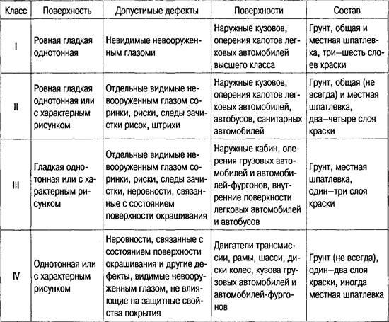
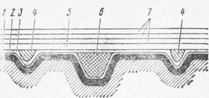

Тема 17
Лакокрасочные материалы
Классификация ЛКМ по областям применения
Классификация лакокрасочных покрытий
Лакокрасочные покрытия классифицируются по материалу покрытия, внешнему
виду поверхности покрытия (класс покрытия) и по условиям эксплуатации (группа
покрытия).
Лакокрасочные покрытия по внешнему виду подразделяются на четыре класса
(табл. 1), а по условиям эксплуатации на восемь групп.
Таблица 1. Классификация покрытий по внешнему виду

По условиям эксплуатации покрытия подразделяются на следующие группы:
стойкие, стойкие к воздействию окружающей среды, химически стойкие,
водостойкие, термостойкие, маслостойкие, бензостойкие, электроизоляционные.
Наиболее высокие требования к лакокрасочным покрытиям предъявляются при
окраске кузовов легковых автомобилей. Эти покрытия состоят из фосфатной пленки,
грунтовки, местной и общей шпаклевки при ремонте автомобилей и нескольких (2—5)
слоев краски. Они должны отвечать требованиям 1-го класса.
Покрытие кузовов автобусов, кабин, оперения и капотов грузовых
автомобилей состоит из грунтовки, местной шпаклевки (при ремонте) и
двух-четырех слоев краски и должно отвечать требованиям 2-го класса.

Рис. 1. Схема лакокрасочного покрытия:
Агрегаты автомобилей (двигатели, рамы, колеса и др.), а также грузовые
платформы покрываются одним слоем грунта (не всегда) и одним-двумя слоями
краски. К этим покрытиям предъявляются требования 3-го и 4-го классов. Таким
образом, лакокрасочное покрытие в наиболее полном виде состоит из фосфатной
пленки, грунтовки, местной шпаклевки, общей шпаклевки и слоев краски
(внутреннего покрытия). Общая толщина лакокрасочного покрытия обычно не
превышает 0,1 мм.
Фосфатирование производится окунанием с выдержкой (несколько минут), а
при небольших поверхностях — кистью или тампоном, смоченными раствором или
пастой.
Перед фосфатирпвапием поверхность тщательно очищают, после
фосфатирования промывают водой, просушивают и подвергают грунтовке не иоаднее
чем через 2—3 дня
Грунтовка наносится сплошным ровным тонким слоем (толщиной 0,015—0,020
мм) после фосфатирования или непосредственно на тщательно очищенную
окрашиваемую поверхность.
Грунтовки в наиболее полном виде состоят из пленкообразователей,
растворителей, разбавителей, пигментов, наполнителей, сиккативов и
стабилизаторов (поверхностно-активных веществ)
Вязкость большинства грунтовок ниже, чем красок, и составляет от 15 до
24 с по вискозиметру ВЗ-4 при температуре 18—20° С. Это позволяет наносить их
тонким слоем (расход 100 — 120 г/мг), улучшить сцепление с окрашиваемой
поверхностью и заполнение мелких пор.
Для грунтовки боидеризированных кузовов легковых и кабин грузовых
автомобилей используется водоразбавленный грунт ПФ-033, электрофорезный грунт
ФЛ-093 и др. Если окрашиваемая поверхность не полностью очищена от ржавчины
(толщина слоя до 0,01 мм), используют грунт-преобразователь коррозии ВА-0112,
составляющие которого вступают в реакцию с гидроокислами железа и образуют на
металле инертные нерастворимые примеси. После этого можно наносить обычные
грунтовки ГФ-020 или ФЛ-ОЗк, а также пентафталевые эмали.
Фосфатирующие грунты ВЛ-08, ВЛ-02 и им подобные выгодно отличаются тем,
что образуют на поверхности не только слой грунтовки, но и пленку
фосфорнокислых соединений суммарной толщиной 0,006-0,012 мм.
Шпаклевка – густая жидкость или паста, состоящая из пленкообразователей,
растворителей, наполнителей (мел, тальк и др.), пигментов и иногда
пластификаторов.
Слой шпаклевки не улучшает механические качества лакового покрытия, и,
более того, при значительной толщине шпаклевки происходит снижение прочности
лакокрасочного покрытия. Поэтому для уменьшения слоя шпаклевки поверхность
перед окраской должна быть хорошо выровнена и может иметь только риски и
незначительные углубления. Глубокие вмятины до покрасочных работ заполняются
термопластиками и эпоксидными настами При этом обращается внимание на то, чтобы
температура сушки лакокрасочного покрытия была ниже температуры разрушения
наполнителей.
Шпаклевание бывает местное, когда устраняют отдельные неровности, и
сплошное, когда (после местного шпаклевания) шпаклевку наносят на всю поверхность.
При местном шпаклевании пастообразную шпаклевку наносят шпателем, а при
сплошном используют грунты-шпаклевки в виде жидкости с вязкостью 20—30 с по
вискозиметру ВЗ-4 при температуре 18—23 °С, которые наносят на поверхность при
помощи краскораспылителя. После шпаклевания поверхность шлифуют.
Шпаклевки классифицируются по типу пленкообразователей:
ни-троцеллюлозные, пентафталевые, алкидно-стирольные, эпоксидные и т. д. При
окраске автомобилей широко используют питроцеллю-лозные шпаклевки НЦ-00-8
(защитно-серая), НЦ-00-7 (красно-коричневая).
Краска представляет собой смесь (суспензию) лаков или
пленкообразователей с пигментами.
Лаком называется коллоидный раствор одного или же нескольких
пленкообразователей в растворителях и разбавителях иногда с добавкой
пластификатора и сиккатива.
Масляные лаки поедставляют собой олифы с добавкой смоляных
пленкообразователей.
Краска является наиболее ответственным элементом в лакокрасочном
покрытии. Ее наносят несколькими ровными тонкими слоями. Общая толщина слоев
краски 0,075—0,125 мм. Неоправданное увеличение толщины слоев краски может
уменьшить прочность покрытия, а при недостаточной толщине уменьшаются его
защитное действие и долговечность. Слои кратки подвергаются эрозионному износу
под действием ветра и частичек пыли, и, кроме того, в процессе эксплуатации они
периодически подвергаются полировке. При недостаточной толщине покрытия оно
быстро изнашивается. Необходимая вязкость краски обеспечивается добавлением к
ней только соответствующего растворителя, так как иначе может ухудшиться
качестно ее или даже произойдет порча вследствие свертывания краски. Краски с
разными основами смешивать нельзя.
Различают два вида красок: эмалевые и масляные.
В эмалевых красках (эмалях) пленкообразователями служат различные лаки и
частично олифа, а в масляных — только олифа.
Масляные краски (особенно на натуральных олифах) создают
высокоустойчивую пленку против влаги, солнечного света, колебаний температуры,
но покрытие долго сохнет, не блестит и не поддается шлифованию, а олифа, входящая
в их состав, является дефицитной.
Для окраски автомобилей применяют эмалевые краски. Они при высыхании
образуют твердую глянцевую пленку, напоминающую стеклянную эмаль. По
температуре высыхания они делятся на эмали холодной сушки (18—23 °С) и эмали
горячей сушки 100—170 °С). Эмалевые краски подразделяются по виду основного
пленкообразова-теля.
Для окраски автомобилей применяют нитроцеллюлоз-вые (НЦ),
меламиноалкидные (MJI), глифталевые (ГФ), пентафталевые (ПФ), полиэфирные (ПЭ),
полиакриловые (АК), перхлорвиниловые (ХВ) и некоторые другие эмали.
В состав эмали, кроме основного пленкообразователя, часто входят другие
смолы, а также высыхающие масла для повышения адгезии, эластичности,
механической прочности и других качеств.
Легковые и грузовые автомобили в основном красят нитро- и
меламиноалкидными эмалями, а автобусы — пентафталевыми и меламиноалкидными
эмалями. В настоящее время в нашей стране и за рубежом применяют так называемые
водоразбавляемые лакокрасочные материалы, в которых разбавителем служит вода.
Их применение исключает использование относительно дорогих органических
растворителей, уменьшает загрязнение воздуха и пожарную опасность при окраске,
позволяет транспортировать и хранить краски в сухом виде. Водоразбавляемые
краски можно наносить на влажную поверхность.
Во избежание коррозии от действия воды водоразбавляемые лакокрасочные
материалы содержат водорастворимые ингибиторы коррозии и ингибируемые пигменты.
Водоразбавляемые материалы основаны на смолах, образующих в воде
коллоидные и макромолекулярные растворы. Одни смолы непосредственно
растворяются в воде, а другие приобретают растворимость в воде только после
нейтрализации их карбоксильных групп агогистыми основаниями (аммиаком,
аминами). В водорастворимое состояние могут быть переведены алкидные смолы,
высыхающие масла, полиакрплаты, полистиролы и многие другие полимеры.
Нитроэмали НЦ-11 представляют собой суспензию СВП (пигмент,
развальцованный с нитроцеллюлозой, пластификатором и диспергатором) в растворе
колоксчлина и алкидной смолы в смеси летучих органических растворителей с
добавлением пластификаторов. Вязкость эмали 17-22 с по ВЗ-4 при 20° С доводится
с помощью растворителей 646, 647, 648. Они устойчивы в атмосферных условиях
умеренного и холодного климата (3 года черного цвета и 2 года других цветов).
Важным преимуществом нитроэмалей (НЦ-11) является то, что они быстро
высыхают при обычной температуре (примерно за 20 мин при температуре 20 °С).
Поэтому они удобны для использования в условиях автотранспортных предприятий,
не требуют сушильных камер и в условиях автомобильных заводов позволяют
производить окраску на линии сборочного конвейера.
Нитроэмали более стойки к действию нефтепродуктов, чем масляные краски и
смоляные эмали. В то же время нитроэмали недостаточно водонепроницаемы, поэтому
применяемые с ними грунты и шпаклевки должны быть водонепроницаемы. Для них
также характерна недостаточная механическая прочность и стойкость к действию
ультрафиолетовых лучей, повышенная хрупкость и огнеопасность, окрашенные ими
поверхности нельзя нагревать свыше 75 °С. В нитроэмалях содержится относительно
много растворителя, так как их рабочая вязкость 17—22с по В3-4при 20 °С.
Поэтому, чтобы добиться нужной укрывистости и получить пленку определенной
толщины, приходится наносить до пяти слоев эмали (для легковых автомобилей),
что связано с повышением трудоемкости и увеличением расхода растворителя. Для
получения блестящей пленки поверхность шлифуют и полируют.
Чтобы повысить прилипаемость нитроэмалей, к ним добавляют смолы
(глифталевые и др.).
Меламиноалкидные эмали MЛ-12 представляют собой суспензию пигментов в
растворителях алкидных меламино-формальдегидных смол и органических
растворителях. Вязкость 24-32 с по ВЗ-4 достигается с помощью растворителя
Р-198 (этилцеллозольв — 50%, циклогексан — 50%) или сольвента.
Эмали устойчивы в атмосферных условиях умеренного и холодного климата в
течение 3 лет.
Меламиноалкидные эмали MЛ-12 (их еще называют синтетическими) создают
блестящее покрытие, не требующее полировки и обладающее высокой
атмосферостойкостыо, стойкостью к непостоянному действию бензина и минерального
масла. Покрытие из этих эмалей отличается эластичностью, твердостью,
долговечностью.
Для получения покрытия необходимой толщины достаточно нанести два-три
слоя вязкостью 24—32 с по ВЗ-4 вместо четырех-пяти у нитроэмалей.
Отрицательной особенностью меламиноалкидных эмалей является высокая
температура сушки, которая нежелательна для шип и резиновых уплотнительных
деталей, и необходимость иметь специальные сушильные камеры. Эти эмали высыхают
в течение часа при температуре 130-140° С. Получают меламиноалкидные эмали на
основе меламиноформальдегидных и глифталевых смол.
Возникшие во время эксплуатации местные дефекты покрытий из
синтетических эмалей можно исправлять нитроэмалями.
Полиакрилатная эмаль АС-127 создает высококачественное покрытие, которое
имеет срок службы в 1,5 раза больший по сравнению с покрытиями из
меламиноалкидных эмалей. Эмаль АС-127 наносят тремя слоями по загрунтованной
поверхности. Покрытие из эмали АС-127 обладает высокой атмосферостойкостыо,
противокоррозионной защитой, декоративными свойствами, блеском, которые
сохраняются длительное время в различных климатических условиях.
Пентафталевые эмали образуют атмосферостойкие эластичные и твердые
покрытия. Высыхают они при обычной температуре, но время требуется до 48 ч.
Покрытие поддается полированию.
Для окраски грузовых автомобилей используют меламиноалкидные эмали
MЛ-12, MЛ-152, перхлорвиниловые эмали ХВ-113 (при 60 °С высыхают в течение
часа), а также алкидно-карбоидную эмаль АК, высыхающую при температуре 70—75° С
за 50 мин.
Деревянные платформы грузовых автомобилей красят водоэмульсионными
глифталевыми эмалями, высыхающими при температуре 65—70 °С в течение часа.
Для окраски кузовов лег к оных автомобилей на автомобильных заводах
используют меламиноалкидные эмали MЛ-12 и МЛ-152 различных цветов. На
автотранспортных предприятиях для этих целей широко применяют нитроэмали НЦ-11
также различных цветов. Использование на автотранспортных предприятиях
меламиноалкидных эмалей в ряде случаев ограничивается отсутствием
соответствующих камер для горячей сушки.
Автобусные кузова красят синтетическими эмалями MЛ-12 или пентафталевой
эмалью (ПФ), которая высыхает при температуре 100—110° С в течение часа, а при
18—23 °С— в течение 48 ч. Внутреннюю поверхность кузова автобуса красят эмалью
НЦ-25.
У легковых автомобилей поверхности кузова и оперения, обращенные к
полотну дороги, для защиты от коррозии покрывают методом пневматического, или
безвоздушного, нанесения антикоррозионных и противошумных мастик толщиной 1,5—2
мм по предварительной нанесенной грунтовке. Например, мастика № 579
представляет собой раствор битума в растворителе с волокнистым асбестом. Мастики БПМ-1
и № 213 также в качестве основы имеют битум. Используется также импортный
состав «Тектил-122А» американской фирмы «Валволин».
Закрытые полости кузовов легковых автомобилей обрабатывают (покрывают)
специальными антикоррозионными составами, что существенно увеличивает срок
службы кузовов. Используемые для этого отечественные составы НГМ-МЛ и
«Мовиль», а также импортные «Тектил-309МЛ» и «Лобакон-667к» представляют собой
тонкопленочные покрытия. Они хорошо проникают в сварные швы, стыки, зазоры и
обладают высокой пропитывающей и водовытесняющей способностью.
Для окраски агрегатов трансмиссии и узлов шасси используют нитроэмаль
НЦ-184, алкидно-стирольную нитроэмаль МС-17 и др. В последние годы стали
применять (например, на Горьковском автомобильном заводе) водоразбавляемую
эмаль горячей сушки ФЛ-149. Она стойка к действию масел, бензина и воды,
высыхает за 3 мин при температуре 180—190° С. Разбавляют ее водой, содержащей
0,5% аммиака. Грунтовкой под эти эмали служит водоразбавленный грунт ПФ-033.
Двигатель окрашивают алюминиевой краской, состоящей из алюминиевой пасты
или пудры (6—10%) и основы. В качестве основы служит лак.